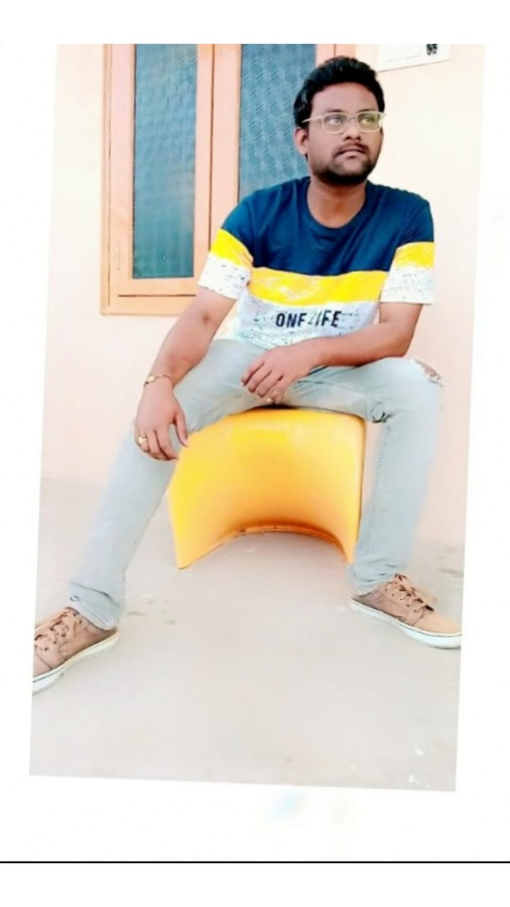
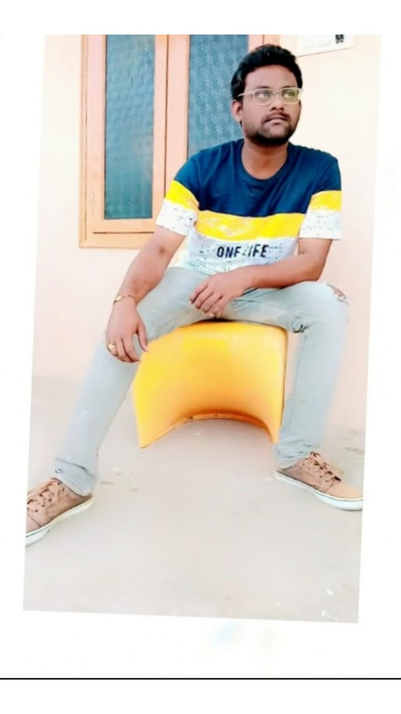

Image tags practise
Absolute path

suriya
- Suriya was born as Saravanan on 23 July 1975 in Madras (now Chennai), Tamil Nadu, to actor Sivakumar and his wife Lakshmi.
He attended Padma Seshadri Bala Bhavan Schooland St. Bede's Anglo Indian Higher Secondary School in Chennai, and obtained his under graduate degree B.Com from Loyola College, Chennai.
Suriya has two younger siblings, a brother Karthi and a sister Brindha.

Konidela Chiranjeevi (born Konidela Sivasankara Varaprasad; 22 August 1955) is an Indian actor, film producer and former politician. He is regarded as one of the most successful and influential actors in the history of Indian cinema
Relative path

 

Task1
if it is Same folder use ./ (if it is in different ../)